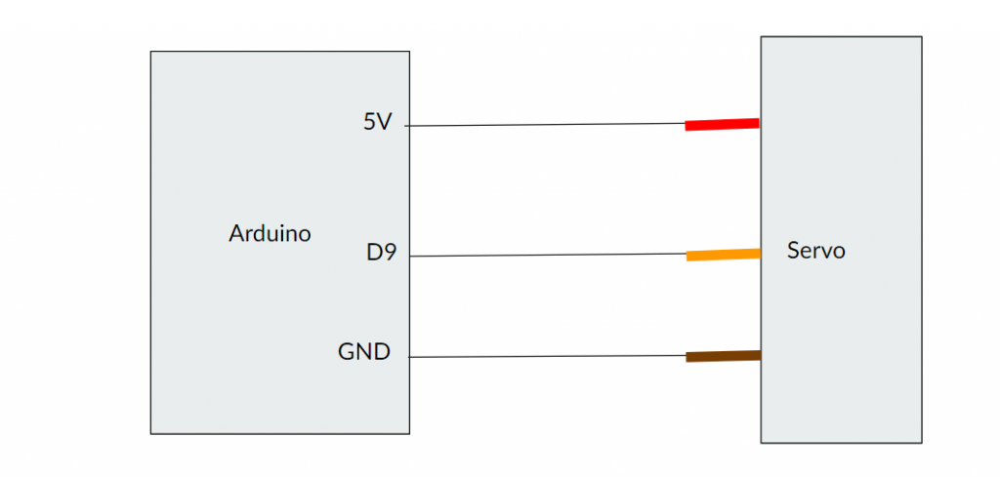
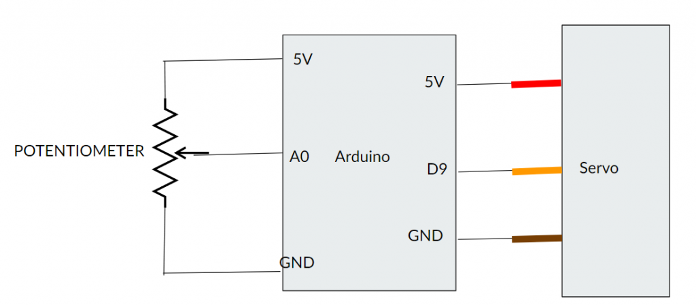

Electronics Bash - Arduino #3 - Steppers and Servos

In this stream, we'll be looking at:
- Stepper motor control
- Serial control
- The DO...WHILE loop
- randomness and the random() funciton
- Probably more!
This is the space where I'll be posting code samples and circuit layouts sometime in advance of the stream, for those who want to follow along more directly. This is the first stream I'll be doing this for, so you can expect the formatting and content here to change significantly over time as I figure out how to lay out this space.
Servo Motor Control

Servo Basic
Shows the basic functionality of a Servo attached to pin 9. Steps from 0, to 90 degrees, to 180 degrees and back, pausing for 1 second in between each position.
Click here to view code on GithubServo Sweep
This code will sweep the Servo attached to pin 9 back and forth between 0 and 180 degrees using a pair of FOR loops. This is literally the Servo > Sweep example from the Servo library.
Click here to view code on Github
Servo Knob
This code will control the position of a Servo attached to pin 9 using the position of a potentiometer attached to pin A0. This is literally the Servo > Knob example from the Arduino IDE.
Click here to view code on GithubServo Random
This code will control the position of a Servo attached to pin 9 in a random fashion, demonstrating the random() and randomSeed() functions to generate random numbers:
Click here to view code on GithubStepper Motor Control

Stepper Knob
This code will control the position of a stepper attached to pins 8, 9, 10, and 11 as shown in the diagram above, using the attached potentiometer. This is literally the Stepper > MotorKnob example from the Arduino IDE.
Click here to view code on GithubStepper Speed Control
This code will control the position of a stepper attached to pins 8, 9, 10, and 11 as shown in the diagram above, using the attached potentiometer to control the speed. This is literally the Stepper > speedControl example from the Arduino IDE.
Click here to view code on GithubStepper Homing
This code will control the position of a stepper attached to pins 8, 9, 10, and 11 as shown in the diagram above, using a microswitch attached to pin D4 to set a "home" position:
Click here to view code on GithubButton Drive
This code will control the position of a stepper attached to pins 8, 9, 10, and 11 as shown in the diagram above, using a pair of buttons attached to pins 6 and 7.
Click here to view code on GithubButton Go-Stop
This code will control the position of a stepper attached to pins 8, 9, 10, and 11 as shown in the diagram above, using a pair of buttons attached to pins 6 and 7. It will turn in one direction when one button is pressed, turn the other when the other button is pressed, and stop when both buttons are pressed.
Click here to view code on Github